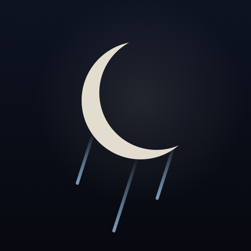

Support
Getting Started
Tap a sound and it fades in. Tap it again to pause, or tap another sound to crossfade. After 8 seconds the screen dims to near-black; tap anywhere to wake it. Start quiet, with the volume just loud enough to cover background noise.
Common Questions
How does the sleep timer work?
Sounds play for 45 minutes by default, then fade out slowly over the last 8 minutes. Tap the time on the bar at the bottom of the screen to change it, or set your default timer and fade length in Settings.
Can it play all night?
Yes. Tap the time until it reads All night. This is best kept for noisy rooms, at the lowest volume that covers the noise.
Will it keep playing when my phone is locked?
Yes. Sound continues with the screen locked, and you can pause it from the Lock Screen. A phone call pauses it, and removing headphones pauses it too.
I can't hear anything.
Check your volume, then make sure your iPhone isn't connected to Bluetooth headphones or a speaker you aren't using. Some low sounds are quiet on iPhone speakers, so try headphones or a speaker to compare.
Can I use Siri?
Yes. Try "Play rain in Hushfall", "Play thunderstorm in Hushfall" or "Pause Hushfall". Any sound can also be started from the Shortcuts app.
Do I need an internet connection?
No. Every sound is built into the app.
How much does Hushfall cost?
Hushfall is a one-time $0.99 download in the US, and local prices vary. Everything is included, with no subscription and no in-app purchases. Refunds are handled by Apple at reportaproblem.apple.com.
Is Hushfall a medical device?
No. Hushfall is a wellness app for winding down. It does not diagnose or treat any condition. If you have ongoing trouble sleeping, please talk to your doctor.
Report a Bug or Request a Feature
Email support@cooperindustries.cc. For bugs, tell us what you did, what you expected and what happened instead.